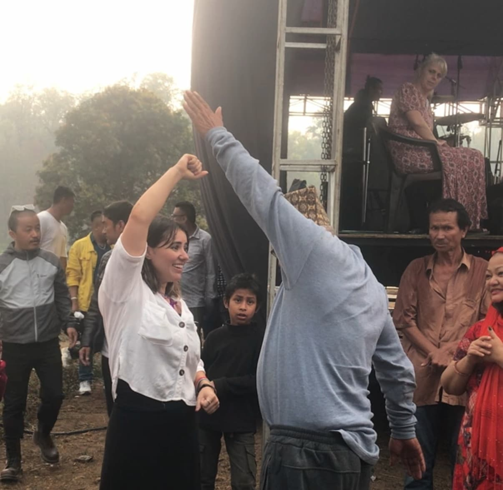

Get Up and Walk
This was a man who was completely paralyzed on his left side of his body from a stroke. There was so much faith in that crowd from the many miracles the Lord performed that day. I was lead by a group of people to pray for this man. I saw him sitting with a cane and I grabbed his arm and lifted him up from the chair and said "get up and walk" and this man rose to his feet starting to walk, moving his arm and leg for the first time in 10 years. He was a muslim man who surrendered his life to Jesus after that.JESUS IS KING!